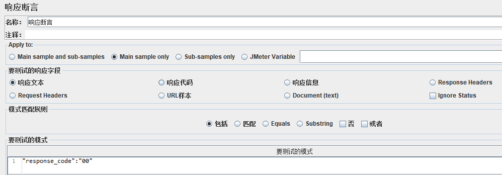
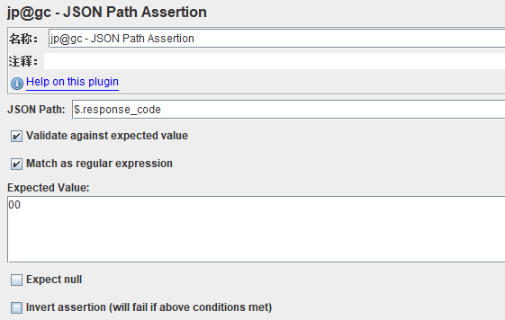
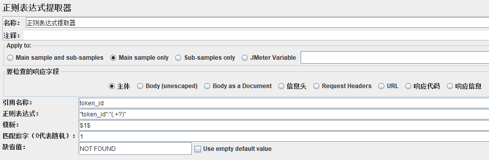
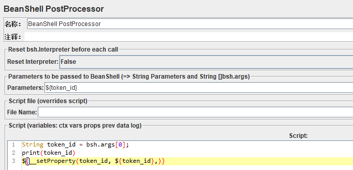
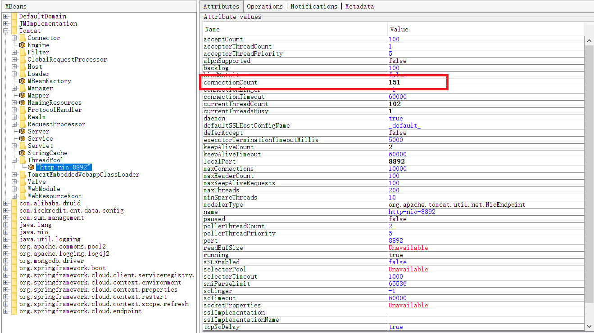
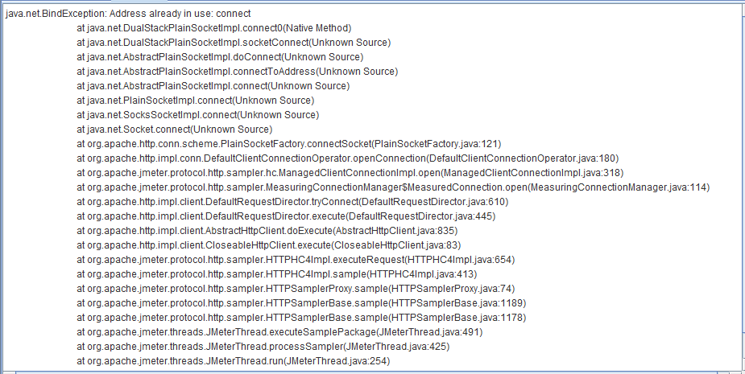
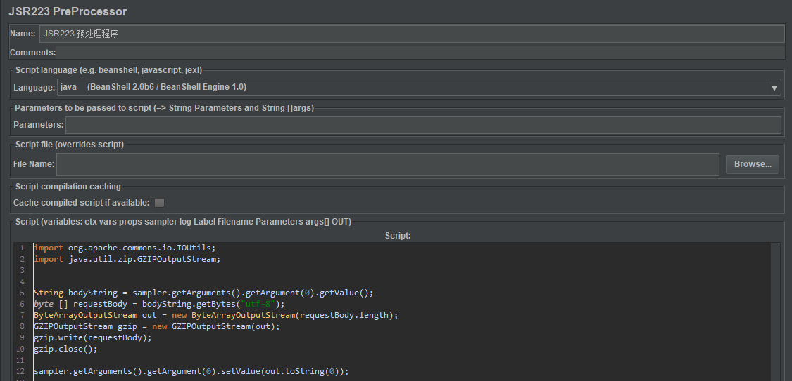

<!DOCTYPE html>
<html lang="en">
<head><meta name="generator" content="Hexo 3.8.0">
    <meta charset="utf-8">
    
    <title>
        JMeter日常总结 |
        
        YingLong</title>
    
    
        <meta name="keywords" content="Test，JMeter">
    
    <meta name="viewport" content="width=device-width, initial-scale=1, maximum-scale=1">
    <meta name="description" content="断言在对接口进行测试时，通常需要对接口调用结果进行断言，以确定接口调用是否达到预期，同时也可以在结果数中看到接口是否调用成功。响应断言和jp@gc - JSON Path Assertion是比较简单和常用的两个断言器。 在HTTP请求下添加断言 -&amp;gt; 响应断言，可以通过不同的模式匹配规则进行匹配断言。  在HTTP请求下添加断言 -&amp;gt; jp@gc - JSON Path Assert">
<meta name="keywords" content="Test，JMeter">
<meta property="og:type" content="article">
<meta property="og:title" content="JMeter日常总结">
<meta property="og:url" content="https://yaoyinglong.github.io/Blog/Test/JMeter日常总结/index.html">
<meta property="og:site_name" content="YingLong">
<meta property="og:description" content="断言在对接口进行测试时，通常需要对接口调用结果进行断言，以确定接口调用是否达到预期，同时也可以在结果数中看到接口是否调用成功。响应断言和jp@gc - JSON Path Assertion是比较简单和常用的两个断言器。 在HTTP请求下添加断言 -&amp;gt; 响应断言，可以通过不同的模式匹配规则进行匹配断言。  在HTTP请求下添加断言 -&amp;gt; jp@gc - JSON Path Assert">
<meta property="og:locale" content="en">
<meta property="og:image" content="https://yaoyinglong.github.io/images/Test/响应断言.png">
<meta property="og:image" content="https://yaoyinglong.github.io/images/Test/JSON_Path_Assertion.png">
<meta property="og:image" content="https://yaoyinglong.github.io/images/Test/XPath%20Extractor.png">
<meta property="og:image" content="https://yaoyinglong.github.io/images/Test/正则表达式提取器.png">
<meta property="og:image" content="https://yaoyinglong.github.io/images/Test/BeanShell设置全局变量.png">
<meta property="og:image" content="https://yaoyinglong.github.io/images/Test/CSV%20Data%20Set%20Config.png">
<meta property="og:image" content="https://yaoyinglong.github.io/images/Test/JMeter线程组并发坑.png">
<meta property="og:image" content="https://yaoyinglong.github.io/images/Test/JMeterBindExecption.png">
<meta property="og:image" content="https://yaoyinglong.github.io/images/Test/Gzip压缩预处理.png">
<meta property="og:updated_time" content="2019-06-03T06:53:06.028Z">
<meta name="twitter:card" content="summary">
<meta name="twitter:title" content="JMeter日常总结">
<meta name="twitter:description" content="断言在对接口进行测试时，通常需要对接口调用结果进行断言，以确定接口调用是否达到预期，同时也可以在结果数中看到接口是否调用成功。响应断言和jp@gc - JSON Path Assertion是比较简单和常用的两个断言器。 在HTTP请求下添加断言 -&amp;gt; 响应断言，可以通过不同的模式匹配规则进行匹配断言。  在HTTP请求下添加断言 -&amp;gt; jp@gc - JSON Path Assert">
<meta name="twitter:image" content="https://yaoyinglong.github.io/images/Test/响应断言.png">
    

    

    
        <link rel="icon" href="/favicon.ico">
    

    <link rel="stylesheet" href="/libs/font-awesome/css/font-awesome.min.css">
    <link rel="stylesheet" href="/libs/open-sans/styles.css">
    <link rel="stylesheet" href="/libs/source-code-pro/styles.css">

    <link rel="stylesheet" href="/css/style.css">
    <script src="/libs/jquery/2.1.3/jquery.min.js"></script>
    <script src="/libs/jquery/plugins/cookie/1.4.1/jquery.cookie.js"></script>
    
    
        <link rel="stylesheet" href="/libs/lightgallery/css/lightgallery.min.css">
    
    
        <link rel="stylesheet" href="/libs/justified-gallery/justifiedGallery.min.css">
    
    
    
    


</head>
</html>
<body>
<div id="container">
    <header id="header">
    <div id="header-main" class="header-inner">
        <div class="outer">
            <a href="/" id="logo">
                <i class="logo"></i>
                <span class="site-title">YingLong</span>
            </a>
            <nav id="main-nav">
                
                    <a class="main-nav-link" href="/">Home</a>
                
                    <a class="main-nav-link" href="/archives">Archives</a>
                
                    <a class="main-nav-link" href="/categories">Categories</a>
                
                    <a class="main-nav-link" href="/tags">Tags</a>
                
                    <a class="main-nav-link" href="/about">About</a>
                
            </nav>
            
            <div id="search-form-wrap">
    
        <form class="search-form">
            <input type="text" class="ins-search-input search-form-input" placeholder="Search">
            <button type="submit" class="search-form-submit"></button>
        </form>
        <div class="ins-search">
    <div class="ins-search-mask"></div>
    <div class="ins-search-container">
        <div class="ins-input-wrapper">
            <input type="text" class="ins-search-input" placeholder="Type something...">
            <span class="ins-close ins-selectable"><i class="fa fa-times-circle"></i></span>
        </div>
        <div class="ins-section-wrapper">
            <div class="ins-section-container"></div>
        </div>
    </div>
</div>
<script>
    (function (window) {
        var INSIGHT_CONFIG = {
            TRANSLATION: {
                POSTS: 'Posts',
                PAGES: 'Pages',
                CATEGORIES: 'Categories',
                TAGS: 'Tags',
                UNTITLED: '(Untitled)',
            },
            ROOT_URL: '/',
            CONTENT_URL: '/content.json',
        };
        window.INSIGHT_CONFIG = INSIGHT_CONFIG;
    })(window);
</script>
<script src="/js/insight.js"></script>
    
</div>
        </div>
    </div>
    <div id="main-nav-mobile" class="header-sub header-inner">
        <table class="menu outer">
            <tr>
                
                    <td><a class="main-nav-link" href="/">Home</a></td>
                
                    <td><a class="main-nav-link" href="/archives">Archives</a></td>
                
                    <td><a class="main-nav-link" href="/categories">Categories</a></td>
                
                    <td><a class="main-nav-link" href="/tags">Tags</a></td>
                
                    <td><a class="main-nav-link" href="/about">About</a></td>
                
                <td>
                    
    <div class="search-form">
        <input type="text" class="ins-search-input search-form-input" placeholder="Search">
    </div>

                </td>
            </tr>
        </table>
    </div>
</header>

    <div class="outer">
        
        
            <aside id="sidebar">
    
        
    <div class="widget-wrap" id="categories">
        <h3 class="widget-title">
            <span>categories</span>
            &nbsp;
            <a id="allExpand" href="#">
                <i class="fa fa-angle-double-down fa-2x"></i>
            </a>
        </h3>

        
        
        
            <ul class="unstyled" id="tree">
                
                    <li class="directory">
                        <a href="#" data-role="directory">
                            <i class="fa fa-folder"></i>
                            &nbsp;
                            DB
                        </a>
                        
            <ul class="unstyled" id="tree">
                
                    <li class="file"><a href="/Blog/DB/MySQL基础/">MySQL基础</a></li>
                
                    <li class="file"><a href="/Blog/DB/MySQL常用SQL总结/">MySQL常用SQL总结</a></li>
                
            </ul>
        
                    </li>
                
                    <li class="directory">
                        <a href="#" data-role="directory">
                            <i class="fa fa-folder"></i>
                            &nbsp;
                            Git
                        </a>
                        
            <ul class="unstyled" id="tree">
                
                    <li class="file"><a href="/Blog/Git/GIt基本概念/">Git基本概念</a></li>
                
                    <li class="file"><a href="/Blog/Git/GIt常用命令/">Git常用命令</a></li>
                
                    <li class="file"><a href="/Blog/Git/分支管理理解/">分支管理理解</a></li>
                
            </ul>
        
                    </li>
                
                    <li class="directory">
                        <a href="#" data-role="directory">
                            <i class="fa fa-folder"></i>
                            &nbsp;
                            Go
                        </a>
                        
            <ul class="unstyled" id="tree">
                
                    <li class="file"><a href="/Blog/Go/Go基础/">Go基础</a></li>
                
            </ul>
        
                    </li>
                
                    <li class="directory">
                        <a href="#" data-role="directory">
                            <i class="fa fa-folder"></i>
                            &nbsp;
                            Java
                        </a>
                        
            <ul class="unstyled" id="tree">
                
                    <li class="directory">
                        <a href="#" data-role="directory">
                            <i class="fa fa-folder"></i>
                            &nbsp;
                            VM
                        </a>
                        
            <ul class="unstyled" id="tree">
                
                    <li class="file"><a href="/Blog/Java/VM/HotSpot收集算法实现/">HotSpot收集算法实现</a></li>
                
                    <li class="file"><a href="/Blog/Java/VM/JVM内存池/">JVM内存池</a></li>
                
                    <li class="file"><a href="/Blog/Java/VM/内存非配与回收策略/">内存分配与回收策略</a></li>
                
                    <li class="file"><a href="/Blog/Java/VM/Java内存区域/">Java内存区域</a></li>
                
                    <li class="file"><a href="/Blog/Java/VM/Minor&Major&Full GC/">Minor&Major&Full GC</a></li>
                
                    <li class="file"><a href="/Blog/Java/VM/OutOfMemoryError异常/">OOM异常实验</a></li>
                
                    <li class="file"><a href="/Blog/Java/VM/垃圾收集算法/">垃圾收集算法</a></li>
                
                    <li class="file"><a href="/Blog/Java/VM/堆中对象分配&布局&访问/">堆中对象分配&布局&访问</a></li>
                
                    <li class="file"><a href="/Blog/Java/VM/对象是否存活/">对象是否存活</a></li>
                
                    <li class="file"><a href="/Blog/Java/VM/类加载的时机/">类加载的时机</a></li>
                
                    <li class="file"><a href="/Blog/Java/VM/运行时栈帧结构/">运行时栈帧结构</a></li>
                
                    <li class="file"><a href="/Blog/Java/VM/垃圾收集器/">垃圾收集器</a></li>
                
                    <li class="file"><a href="/Blog/Java/VM/方法调用/">方法调用</a></li>
                
                    <li class="file"><a href="/Blog/Java/VM/字节码指令/">字节码指令</a></li>
                
                    <li class="file"><a href="/Blog/Java/VM/理解GC日志/">理解GC日志</a></li>
                
                    <li class="file"><a href="/Blog/Java/VM/类加载器/">类加载器</a></li>
                
                    <li class="file"><a href="/Blog/Java/VM/Class文件结构/">Class文件结构</a></li>
                
                    <li class="file"><a href="/Blog/Java/VM/属性表集合/">属性表集合</a></li>
                
                    <li class="file"><a href="/Blog/Java/VM/类加载过程/">类加载过程</a></li>
                
            </ul>
        
                    </li>
                
                    <li class="directory">
                        <a href="#" data-role="directory">
                            <i class="fa fa-folder"></i>
                            &nbsp;
                            基础
                        </a>
                        
            <ul class="unstyled" id="tree">
                
                    <li class="file"><a href="/Blog/Java/基础/lambda常用总结/">lambda常用总结</a></li>
                
                    <li class="file"><a href="/Blog/Java/基础/时间及日期总结/">Java8时间及日期</a></li>
                
            </ul>
        
                    </li>
                
                    <li class="directory">
                        <a href="#" data-role="directory">
                            <i class="fa fa-folder"></i>
                            &nbsp;
                            多线程
                        </a>
                        
            <ul class="unstyled" id="tree">
                
                    <li class="file"><a href="/Blog/Java/多线程/原子性、可见性、有序性/">原子性、可见性、有序性</a></li>
                
                    <li class="file"><a href="/Blog/Java/多线程/线程安全/">线程安全</a></li>
                
                    <li class="file"><a href="/Blog/Java/多线程/线程安全实现方式/">线程安全实现方式</a></li>
                
            </ul>
        
                    </li>
                
                    <li class="directory">
                        <a href="#" data-role="directory">
                            <i class="fa fa-folder"></i>
                            &nbsp;
                            工具
                        </a>
                        
            <ul class="unstyled" id="tree">
                
                    <li class="file"><a href="/Blog/Java/工具/Java中调用Groovy脚本/">Java中调用Groovy脚本</a></li>
                
                    <li class="file"><a href="/Blog/Java/工具/国密SM2/">国密SM2</a></li>
                
                    <li class="file"><a href="/Blog/Java/工具/国密SM4/">国密SM4</a></li>
                
            </ul>
        
                    </li>
                
                    <li class="file"><a href="/Blog/Java/JVM整体概览/">JVM整体概览</a></li>
                
            </ul>
        
                    </li>
                
                    <li class="directory">
                        <a href="#" data-role="directory">
                            <i class="fa fa-folder"></i>
                            &nbsp;
                            Linux
                        </a>
                        
            <ul class="unstyled" id="tree">
                
                    <li class="file"><a href="/Blog/Linux/Linux常用命令/">Linux常用命令</a></li>
                
                    <li class="file"><a href="/Blog/Linux/Linux常用技巧/">Linux常用技巧</a></li>
                
            </ul>
        
                    </li>
                
                    <li class="directory">
                        <a href="#" data-role="directory">
                            <i class="fa fa-folder"></i>
                            &nbsp;
                            Maven
                        </a>
                        
            <ul class="unstyled" id="tree">
                
                    <li class="file"><a href="/Blog/Maven/Maven加密JAR包/">Maven加密JAR包</a></li>
                
                    <li class="file"><a href="/Blog/Maven/Maven基础/">Maven基础</a></li>
                
                    <li class="file"><a href="/Blog/Maven/Maven常用/">Maven常用</a></li>
                
                    <li class="file"><a href="/Blog/Maven/Maven属性/">Maven属性</a></li>
                
                    <li class="file"><a href="/Blog/Maven/Maven常用工具/">Maven常用工具</a></li>
                
                    <li class="file"><a href="/Blog/Maven/Maven插件编写/">Maven插件编写</a></li>
                
                    <li class="file"><a href="/Blog/Maven/Maven生命周期/">Maven生命周期</a></li>
                
                    <li class="file"><a href="/Blog/Maven/Maven个性化打包/">Maven个性化打包</a></li>
                
                    <li class="file"><a href="/Blog/Maven/Maven仓库/">Maven仓库</a></li>
                
                    <li class="file"><a href="/Blog/Maven/Maven插件基础/">Maven插件基础</a></li>
                
                    <li class="file"><a href="/Blog/Maven/Maven聚合与继承/">Maven聚合与继承</a></li>
                
                    <li class="file"><a href="/Blog/Maven/Maven常用插件/">Maven常用插件</a></li>
                
                    <li class="file"><a href="/Blog/Maven/Maven标签全解/">Maven标签全解</a></li>
                
                    <li class="file"><a href="/Blog/Maven/Maven Assembly标签全解/">Maven Assembly标签全解</a></li>
                
            </ul>
        
                    </li>
                
                    <li class="directory">
                        <a href="#" data-role="directory">
                            <i class="fa fa-folder"></i>
                            &nbsp;
                            Python
                        </a>
                        
            <ul class="unstyled" id="tree">
                
                    <li class="file"><a href="/Blog/Python/Excel文件数据抽取/">Excel文件数据抽取</a></li>
                
            </ul>
        
                    </li>
                
                    <li class="directory open">
                        <a href="#" data-role="directory">
                            <i class="fa fa-folder-open"></i>
                            &nbsp;
                            Test
                        </a>
                        
            <ul class="unstyled" id="tree">
                
                    <li class="file"><a href="/Blog/Test/IT测试总结/">IT测试总结</a></li>
                
                    <li class="file active"><a href="/Blog/Test/JMeter日常总结/">JMeter日常总结</a></li>
                
                    <li class="file"><a href="/Blog/Test/LoadRunner日常总结/">LoadRunner日常总结</a></li>
                
                    <li class="file"><a href="/Blog/Test/UT测试总结/">UT测试总结</a></li>
                
            </ul>
        
                    </li>
                
                    <li class="directory">
                        <a href="#" data-role="directory">
                            <i class="fa fa-folder"></i>
                            &nbsp;
                            协议族
                        </a>
                        
            <ul class="unstyled" id="tree">
                
                    <li class="file"><a href="/Blog/协议族/TCPIP四层&五层模型/">TCP/IP四层&五层模型</a></li>
                
                    <li class="file"><a href="/Blog/协议族/网络基础知识/">网络基础知识</a></li>
                
                    <li class="file"><a href="/Blog/协议族/以太网/">以太网</a></li>
                
                    <li class="file"><a href="/Blog/协议族/地址解析协议/">地址解析协议ARP</a></li>
                
            </ul>
        
                    </li>
                
                    <li class="directory">
                        <a href="#" data-role="directory">
                            <i class="fa fa-folder"></i>
                            &nbsp;
                            杂记
                        </a>
                        
            <ul class="unstyled" id="tree">
                
                    <li class="file"><a href="/Blog/杂记/IDEA实用插件/">IDEA实用插件</a></li>
                
                    <li class="file"><a href="/Blog/杂记/JAVA实用工具/">JAVA实用工具</a></li>
                
                    <li class="file"><a href="/Blog/杂记/IDEA快捷的使用/">IDEA的快捷使用</a></li>
                
                    <li class="file"><a href="/Blog/杂记/Win实用工具/">Win实用工具</a></li>
                
                    <li class="file"><a href="/Blog/杂记/XSD使用总结/">XSD实用总结</a></li>
                
                    <li class="file"><a href="/Blog/杂记/SonarQube配置总结/">SonarQube配置总结</a></li>
                
            </ul>
        
                    </li>
                
                    <li class="directory">
                        <a href="#" data-role="directory">
                            <i class="fa fa-folder"></i>
                            &nbsp;
                            框架
                        </a>
                        
            <ul class="unstyled" id="tree">
                
                    <li class="directory">
                        <a href="#" data-role="directory">
                            <i class="fa fa-folder"></i>
                            &nbsp;
                            Spring
                        </a>
                        
            <ul class="unstyled" id="tree">
                
                    <li class="file"><a href="/Blog/框架/Spring/Spring Gzip压缩/">Spring Gzip压缩</a></li>
                
                    <li class="file"><a href="/Blog/框架/Spring/IoC容器/">IoC容器</a></li>
                
                    <li class="file"><a href="/Blog/框架/Spring/Spring整体架构/">Spring整体架构</a></li>
                
                    <li class="file"><a href="/Blog/框架/Spring/Spring知识点/">Spring知识点</a></li>
                
                    <li class="file"><a href="/Blog/框架/Spring/Spring线程池跨线程数据共享/">Spring线程池跨线程数据共享</a></li>
                
                    <li class="file"><a href="/Blog/框架/Spring/Hystrix总结/">Hystrix总结</a></li>
                
                    <li class="file"><a href="/Blog/框架/Spring/SpringMvc异步/">SpringMvc异步原理及实现</a></li>
                
            </ul>
        
                    </li>
                
                    <li class="directory">
                        <a href="#" data-role="directory">
                            <i class="fa fa-folder"></i>
                            &nbsp;
                            常见问题
                        </a>
                        
            <ul class="unstyled" id="tree">
                
                    <li class="file"><a href="/Blog/框架/常见问题/HBase依赖冲突/">HBase依赖冲突</a></li>
                
                    <li class="file"><a href="/Blog/框架/常见问题/Maven编译后文件损坏/">Maven编译后文件损坏</a></li>
                
            </ul>
        
                    </li>
                
                    <li class="file"><a href="/Blog/框架/Redis分布式锁实现/">Redis分布式锁实现</a></li>
                
                    <li class="file"><a href="/Blog/框架/Tomcat工作原理/">Tomcat工作原理</a></li>
                
            </ul>
        
                    </li>
                
                    <li class="directory">
                        <a href="#" data-role="directory">
                            <i class="fa fa-folder"></i>
                            &nbsp;
                            算法
                        </a>
                        
            <ul class="unstyled" id="tree">
                
                    <li class="directory">
                        <a href="#" data-role="directory">
                            <i class="fa fa-folder"></i>
                            &nbsp;
                            排序
                        </a>
                        
            <ul class="unstyled" id="tree">
                
                    <li class="file"><a href="/Blog/算法/排序/冒泡排序/">冒泡排序</a></li>
                
            </ul>
        
                    </li>
                
                    <li class="file"><a href="/Blog/算法/二叉搜索树/">二叉搜索树</a></li>
                
                    <li class="file"><a href="/Blog/算法/平衡二叉树/">平衡二叉树</a></li>
                
                    <li class="file"><a href="/Blog/算法/时间&空间复杂/">时间&空间复杂</a></li>
                
                    <li class="file"><a href="/Blog/算法/树基础/">树基础</a></li>
                
            </ul>
        
                    </li>
                
                    <li class="directory">
                        <a href="#" data-role="directory">
                            <i class="fa fa-folder"></i>
                            &nbsp;
                            设计模式
                        </a>
                        
            <ul class="unstyled" id="tree">
                
                    <li class="file"><a href="/Blog/设计模式/SOLID基本原则/">SOLID基本原则</a></li>
                
                    <li class="file"><a href="/Blog/设计模式/设计模式概览/">设计模式概览</a></li>
                
            </ul>
        
                    </li>
                
                    <li class="file"><a href="/Blog/index/">Welcome YingLong's Blog</a></li>
                
            </ul>
        
    </div>
    <script>
        $(document).ready(function () {
            var iconFolderOpenClass = 'fa-folder-open';
            var iconFolderCloseClass = 'fa-folder';
            var iconAllExpandClass = 'fa-angle-double-down';
            var iconAllPackClass = 'fa-angle-double-up';
            // Handle directory-tree expansion:
            // 左键单独展开目录
            $(document).on('click', '#categories a[data-role="directory"]', function (event) {
                event.preventDefault();

                var icon = $(this).children('.fa');
                var expanded = icon.hasClass(iconFolderOpenClass);
                var subtree = $(this).siblings('ul');
                icon.removeClass(iconFolderOpenClass).removeClass(iconFolderCloseClass);
                if (expanded) {
                    if (typeof subtree != 'undefined') {
                        subtree.slideUp({duration: 100});
                    }
                    icon.addClass(iconFolderCloseClass);
                } else {
                    if (typeof subtree != 'undefined') {
                        subtree.slideDown({duration: 100});
                    }
                    icon.addClass(iconFolderOpenClass);
                }
            });
            // 右键展开下属所有目录
            $('#categories a[data-role="directory"]').bind("contextmenu", function (event) {
                event.preventDefault();

                var icon = $(this).children('.fa');
                var expanded = icon.hasClass(iconFolderOpenClass);
                var listNode = $(this).siblings('ul');
                var subtrees = $.merge(listNode.find('li ul'), listNode);
                var icons = $.merge(listNode.find('.fa'), icon);
                icons.removeClass(iconFolderOpenClass).removeClass(iconFolderCloseClass);
                if (expanded) {
                    subtrees.slideUp({duration: 100});
                    icons.addClass(iconFolderCloseClass);
                } else {
                    subtrees.slideDown({duration: 100});
                    icons.addClass(iconFolderOpenClass);
                }
            })
            // 展开关闭所有目录按钮
            $(document).on('click', '#allExpand', function (event) {
                event.preventDefault();

                var icon = $(this).children('.fa');
                var expanded = icon.hasClass(iconAllExpandClass);
                icon.removeClass(iconAllExpandClass).removeClass(iconAllPackClass);
                if (expanded) {
                    $('#sidebar .fa.fa-folder').removeClass('fa-folder').addClass('fa-folder-open')
                    $('#categories li ul').slideDown({duration: 100});
                    icon.addClass(iconAllPackClass);
                } else {
                    $('#sidebar .fa.fa-folder-open').removeClass('fa-folder-open').addClass('fa-folder')
                    $('#categories li ul').slideUp({duration: 100});
                    icon.addClass(iconAllExpandClass);
                }
            });
        });
    </script>

    
    <div id="toTop" class="fa fa-angle-up"></div>
</aside>
        
        <section id="main"><article id="post-Test/JMeter日常总结" class="article article-type-post" itemscope itemprop="blogPost">
    <div class="article-inner">
        
        
            <header class="article-header">
                
                    <div class="article-meta">
                        
    <div class="article-category">
        <i class="fa fa-folder"></i>
        <a class="article-category-link" href="/categories/Test/">Test</a>
    </div>

                        
    <div class="article-tag">
        <i class="fa fa-tag"></i>
        <a class="tag-link" href="/tags/Test，JMeter/">Test，JMeter</a>
    </div>

                        
    <div class="article-date">
        <i class="fa fa-calendar"></i>
        <a href="/Blog/Test/JMeter日常总结/">
            <time datetime="2018-04-11T16:00:00.000Z" itemprop="datePublished">2018-04-12</time>
        </a>
    </div>


                        
                    </div>
                
                
    
        <h1 class="article-title" itemprop="name">
            JMeter日常总结
        </h1>
    

            </header>
        
        
        <div class="article-entry" itemprop="articleBody">
            
            
                    
            
            
                <h3 id="断言"><a href="#断言" class="headerlink" title="断言"></a>断言</h3><p>在对接口进行测试时，通常需要对接口调用结果进行断言，以确定接口调用是否达到预期，同时也可以在结果数中看到接口是否调用成功。<strong>响应断言</strong>和<strong><code>jp@gc - JSON Path Assertion</code></strong>是比较简单和常用的两个断言器。</p>
<p>在HTTP请求下添加<strong><code>断言 -&gt; 响应断言</code></strong>，可以通过不同的模式匹配规则进行匹配断言。</p>
<p></p>
<p>在HTTP请求下添加<strong><code>断言 -&gt; jp@gc - JSON Path Assertion</code></strong>。目前看来该断言器只能断言其中一个字段。</p>
<p></p>
<p>一般来说以上两种断言器已经基本够用了，如果遇到比较复杂的可以使用<strong><code>BeanShell</code>断言</strong>来通过脚本进行断言。</p>
<h3 id="变量提取使用"><a href="#变量提取使用" class="headerlink" title="变量提取使用"></a>变量提取使用</h3><p>通常在测试时接口需要进行鉴权，这是通过调用登录接口获取到token_id然后在调用具体接口时将token_id作为参数或者放在header中传入。这里就需要将<strong><code>token_id</code></strong>从鉴权接口的响应中提取出来，然后再使用时传入。</p>
<p>对于鉴权接口在<strong><code>JMeter</code></strong>中可以通过在测试计划中添加<strong><code>setUp Thread Group</code></strong>，并将<strong>线程数</strong>和<strong>循环次数</strong>设置成<strong><code>1</code></strong>，并在该线程组中添加鉴权接口的HTTP请求。可以添加常规的<strong>断言</strong>和<strong>察看结果树</strong>。也可以在线程组中添加<strong>逻辑控制器 <code>-&gt;</code> 仅一次控制器</strong>将鉴权接口相关类容添加至该逻辑控制器下。</p>
<p>目前我用到的变量提取有<strong><code>JSON Extractor</code></strong>和<strong>正则表达式提取器</strong>两种。当然还有其他的提取器，目前这两种提取器基本够用了。</p>
<p><strong><code>JSON Extractor</code></strong>其实是通过<strong><code>XPath</code></strong>从JSON串中取出目标值。</p>
<p></p>
<p><strong>正则表达式提取器</strong>当然是通过正则表达式的方式从字符串中提取目标值。</p>
<p></p>
<p>虽然将变量从响应结果中提取出来了，但是并不能直接使用。可以通过<strong><code>BeanShell PostProcessor</code></strong>将参数设置为全局变量，也可以将其存储到本地文件中使用时通过<strong><code>CSV Data Set Config</code></strong>来读取并使用。</p>
<p><strong>设置成全局变量</strong>相对简单，只需要在<strong><code>BeanShell PostProcessor</code></strong>中配置<strong><code>${__setProperty(token_id, ${token_id},)}</code></strong>脚本即可。这里的print会将提取到的变量打印到<strong><code>cmd</code></strong>窗口中。在使用变量时通过<strong><code>${__property(token_id)}</code></strong>进行获取。</p>
<p></p>
<p>将变量存储到本地文件中，也是通过<strong><code>BeanShell PostProcessor</code></strong>脚本实现的，只是相对于设置全局变量复杂得多。</p>
<figure class="highlight java"><table><tr><td class="gutter"><pre><span class="line">1</span><br><span class="line">2</span><br><span class="line">3</span><br><span class="line">4</span><br><span class="line">5</span><br><span class="line">6</span><br><span class="line">7</span><br><span class="line">8</span><br><span class="line">9</span><br><span class="line">10</span><br><span class="line">11</span><br><span class="line">12</span><br><span class="line">13</span><br><span class="line">14</span><br><span class="line">15</span><br><span class="line">16</span><br><span class="line">17</span><br><span class="line">18</span><br><span class="line">19</span><br><span class="line">20</span><br><span class="line">21</span><br><span class="line">22</span><br><span class="line">23</span><br><span class="line">24</span><br><span class="line">25</span><br><span class="line">26</span><br><span class="line">27</span><br><span class="line">28</span><br><span class="line">29</span><br></pre></td><td class="code"><pre><span class="line"><span class="keyword">import</span> java.util.regex.Matcher; </span><br><span class="line"><span class="keyword">import</span> java.util.regex.Pattern; </span><br><span class="line"><span class="comment">//JMeter的内置API：prev.getResponseData()获取请求的响应内容 </span></span><br><span class="line"><span class="keyword">byte</span>[] responseData = prev.getResponseData();</span><br><span class="line"><span class="comment">//定义正则表达式需要匹配的模式提取相关变量</span></span><br><span class="line">Pattern pattern = Pattern.compile(<span class="string">"\"token_id\":\"(.+?)\""</span>); </span><br><span class="line">Matcher result = pattern.matcher(<span class="keyword">new</span> String(responseData)); <span class="comment">//boolean java.util.regex.Matcher.find()只要找到符合条件的就返回true</span></span><br><span class="line"><span class="keyword">if</span>(result.find())&#123; </span><br><span class="line">    String tokenId += result.group(<span class="number">1</span>)+<span class="string">"\r\n"</span>; </span><br><span class="line">    <span class="comment">//导出的csv存放位置 </span></span><br><span class="line">    String filePath = <span class="string">"D:/test/token.txt"</span>; </span><br><span class="line">    BufferedOutputStream bos = <span class="keyword">null</span>; </span><br><span class="line">    FileOutputStream fos = <span class="keyword">null</span>;</span><br><span class="line">    <span class="keyword">try</span> &#123;</span><br><span class="line">        File file = <span class="keyword">new</span> File(filePath); </span><br><span class="line">        fos = <span class="keyword">new</span> FileOutputStream(file);</span><br><span class="line">        bos = <span class="keyword">new</span> BufferedOutputStream(fos); </span><br><span class="line">        bos.write(tokenId.getBytes()); </span><br><span class="line">    &#125; <span class="keyword">catch</span> (Exception e) &#123; </span><br><span class="line">        e.printStackTrace(); </span><br><span class="line">    &#125; <span class="keyword">finally</span> &#123; </span><br><span class="line">        <span class="keyword">if</span> (bos != <span class="keyword">null</span>) &#123; </span><br><span class="line">            bos.close(); </span><br><span class="line">        &#125; </span><br><span class="line">        <span class="keyword">if</span> (fos != <span class="keyword">null</span>) &#123; </span><br><span class="line">            fos.close(); </span><br><span class="line">        &#125;</span><br><span class="line">    &#125;</span><br><span class="line">&#125;</span><br></pre></td></tr></table></figure>
<p>使用时通过<strong><code>CSV Data Set Config</code></strong>来读取到配置中。</p>
<p></p>
<h3 id="JMeter压测的坑"><a href="#JMeter压测的坑" class="headerlink" title="JMeter压测的坑"></a>JMeter压测的坑</h3><p>在JMeter中通过线程组的方式进行并发压测，但是实际测试中发现，JMeter其实实际上是一个同步的方式去发送请求的，当我们同时压测几个接口时，通过聚合报告很明显的看出JMeter会等到前一个接口结束后才会请求下一个接口。</p>
<p>在单个接口做并发测试时，当我们的并发设置为150时，JMeter的并发请求数确实是150，但是JMeter会等到其中某个请求结束然后再补充一个请求，通俗的将若你的接口延时1分钟，JMeter在这1分钟内只会发150个请求，当其中有请求结束再往里面补充一致维持150个请求。并不能完全模拟真实场景下的高并发。</p>
<p>通过MBean监控Tomcat的collectionCount参数也可以明显的看出这一点：</p>
<p></p>
<h3 id="JMeter-BindExecption：Address-already-in-use：connect"><a href="#JMeter-BindExecption：Address-already-in-use：connect" class="headerlink" title="JMeter BindExecption：Address already in use：connect"></a>JMeter BindExecption：Address already in use：connect</h3><p>在Windows10环境下，通过JMeter对接口进行压测时，在100的并发下聚合报告中会出现百分之三点几的错误率，在150的并发下出现了百分之三十几的错误率，当然在不同的环境和接口响应速率下这个错误率可能会不一样。</p>
<p></p>
<p>具体原因是由于端口被占用，Windows提供给TCP/IP连接的端口为1024-5000，并且要四分钟来循环回收他们。就导致我们在短时间内跑大量的请求时将端口占满了。 </p>
<p>解决方案：</p>
<ol>
<li>cmd中，用regedit打开注册表</li>
<li>在 <code>HKEY_LOCAL_MACHINE\SYSTEM\CurrentControlSet\Services\Tcpip\Parameters</code>下<ol>
<li>右击<code>parameters</code>，添加一个新的<code>DWORD</code>，名字为<code>MaxUserPort</code></li>
<li>然后双击<code>MaxUserPort</code>，输入数值数据为<code>65534</code>，基数选择十进制。</li>
</ol>
</li>
<li>然后重启电脑！重启电脑！重启电脑！</li>
</ol>
<h3 id="Gzip压缩请求"><a href="#Gzip压缩请求" class="headerlink" title="Gzip压缩请求"></a>Gzip压缩请求</h3><p>对于Gzip压缩请求，通常做法是添加<strong><code>JSR223 PreProcessor</code></strong>预处理程序，将请求内容进行压缩。</p>
<p></p>
<figure class="highlight java"><table><tr><td class="gutter"><pre><span class="line">1</span><br><span class="line">2</span><br><span class="line">3</span><br><span class="line">4</span><br><span class="line">5</span><br><span class="line">6</span><br><span class="line">7</span><br><span class="line">8</span><br><span class="line">9</span><br><span class="line">10</span><br><span class="line">11</span><br><span class="line">12</span><br></pre></td><td class="code"><pre><span class="line"><span class="keyword">import</span> org.apache.commons.io.IOUtils;</span><br><span class="line"><span class="keyword">import</span> java.util.zip.GZIPOutputStream;</span><br><span class="line"></span><br><span class="line"></span><br><span class="line">String bodyString = sampler.getArguments().getArgument(<span class="number">0</span>).getValue();</span><br><span class="line"><span class="keyword">byte</span> [] requestBody = bodyString.getBytes(<span class="string">"utf-8"</span>);</span><br><span class="line">ByteArrayOutputStream out = <span class="keyword">new</span> ByteArrayOutputStream(requestBody.length);</span><br><span class="line">GZIPOutputStream gzip = <span class="keyword">new</span> GZIPOutputStream(out);</span><br><span class="line">gzip.write(requestBody);</span><br><span class="line">gzip.close();</span><br><span class="line"></span><br><span class="line">sampler.getArguments().getArgument(<span class="number">0</span>).setValue(out.toString(<span class="number">0</span>));</span><br></pre></td></tr></table></figure>
<p>在上述代码中的<strong><code>getBytes(&quot;utf-8&quot;)</code></strong>最好加上<strong><code>utf-8</code></strong>的编码格式，否正日志可能乱码。</p>
<p>值得注意的是，在<strong><code>HTTP Request</code></strong>中的<strong><code>Content encoding</code></strong>中的编码方式一定不要填，否正很有可能导致乱码，从而导致请求失败。</p>

        </div>
        
    <footer class="article-footer">
    </footer>
    </div>
</article>


    
    <nav id="article-nav">
        
            <a href="/Blog/Java/基础/lambda常用总结/" id="article-nav-newer" class="article-nav-link-wrap">
                <strong class="article-nav-caption">Newer</strong>
                <div class="article-nav-title">
                    
                        lambda常用总结
                    
                </div>
            </a>
        
        
            <a href="/Blog/Test/LoadRunner日常总结/" id="article-nav-older" class="article-nav-link-wrap">
                <strong class="article-nav-caption">Older</strong>
                <div class="article-nav-title">LoadRunner日常总结</div>
            </a>
        
    </nav>


    
    


    <!-- baidu url auto push script -->
    <script type="text/javascript">
        !function () {
            var e = /([http|https]:\/\/[a-zA-Z0-9\_\.]+\.baidu\.com)/gi, r = window.location.href,
                o = document.referrer;
            if (!e.test(r)) {
                var n = "//api.share.baidu.com/s.gif";
                o ? (n += "?r=" + encodeURIComponent(document.referrer), r && (n += "&l=" + r)) : r && (n += "?l=" + r);
                var t = new Image;
                t.src = n
            }
        }(window);
    </script>
</section>
    </div>
    <footer id="footer">
    <div class="outer">
        <div id="footer-info" class="inner">
            YaoYingLong &copy; 2020
            <!-- <a rel="license" href="http://creativecommons.org/licenses/by-nc-nd/4.0/"></a> -->
            <br> Powered by <a href="http://hexo.io/" target="_blank" rel="external nofollow noopener noreferrer">Hexo</a>. Theme - <a href="https://github.com/zthxxx/hexo-theme-Wikitten" rel="external nofollow noopener noreferrer" target="_blank">wikitten</a>
        </div>
    </div>
</footer>
    

    
        <script src="/libs/lightgallery/js/lightgallery.min.js"></script>
        <script src="/libs/lightgallery/js/lg-thumbnail.min.js"></script>
        <script src="/libs/lightgallery/js/lg-pager.min.js"></script>
        <script src="/libs/lightgallery/js/lg-autoplay.min.js"></script>
        <script src="/libs/lightgallery/js/lg-fullscreen.min.js"></script>
        <script src="/libs/lightgallery/js/lg-zoom.min.js"></script>
        <script src="/libs/lightgallery/js/lg-hash.min.js"></script>
        <script src="/libs/lightgallery/js/lg-share.min.js"></script>
        <script src="/libs/lightgallery/js/lg-video.min.js"></script>
    
    
        <script src="/libs/justified-gallery/jquery.justifiedGallery.min.js"></script>
    
    
        <script type="text/x-mathjax-config">
    MathJax.Hub.Config({
        tex2jax: {
            inlineMath: [ ["$","$"], ["\\(","\\)"] ],
            skipTags: ['script', 'noscript', 'style', 'textarea', 'pre', 'code'],
            processEscapes: true,
            TeX: {
                equationNumbers: {
                  autoNumber: 'AMS'
                }
            }
        }
    });
    MathJax.Hub.Queue(function() {
        var all = MathJax.Hub.getAllJax();
        for (var i = 0; i < all.length; ++i)
            all[i].SourceElement().parentNode.className += ' has-jax';
    });


</script>
<script async src="//cdnjs.cloudflare.com/ajax/libs/mathjax/2.7.1/MathJax.js?config=TeX-AMS-MML_HTMLorMML"></script>
    


<!-- Custom Scripts -->
<script src="/js/main.js"></script>

</div>
</body>
